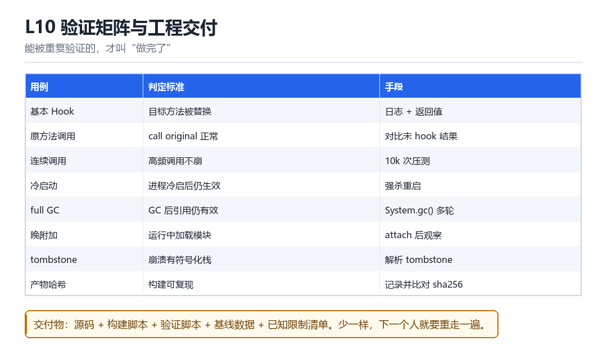

L10
验证矩阵与工程交付
基本 Hook、原方法、连续调用、冷启动、full GC、晚附加、tombstone、产物哈希
能被重复验证的，才叫“做完了”。

10.1 八项用例
| 用例 | 判定标准 | 手段 |
|---|---|---|
| 基本 Hook | 目标方法被替换 | 日志 + 返回值 |
| 原方法调用 | call original 正常 | 对比未 hook 结果 |
| 连续调用 | 高频不崩 | 10k 次压测 |
| 冷启动 | 冷启后仍生效 | 强杀重启 |
| full GC | GC 后引用仍有效 | 多轮 System.gc() |
| 晚附加 | 运行中加载也生效 | attach 后观察 |
| tombstone | 崩溃有符号化栈 | 解析 tombstone |
| 产物哈希 | 构建可复现 | 记录并比对 sha256 |
10.2 交付物清单
- 源码：可编译，依赖明确。
- 构建脚本：一条命令出产物。
- 验证脚本：能自动跑完上面八项。
- 基线数据：干净环境采的对照数据。
- 已知限制清单：哪些版本不支持、哪些场景会失效。
少一样，下一个人就要重走一遍你走过的所有坑。这不只是“文档要求”，而是工程效率问题。
10.3 全书收束
五部 51 讲，从 boot.img 一路走到 KPM 与 LSPosed。回头看，主线只有三条：可信链（怎么验证）、运行链（怎么执行）、检测链（怎么发现）。所有技术都是在这三条线上的某个点做文章。
把地图画对，把实验做扎实，剩下的只是时间问题。
10.11 本章自测
- 八项用例里，哪三项最容易被忽略？
- 交付物清单为什么必须有“已知限制”？
- 三条主线分别是什么？
- 如果让你给自己出一道综合题，你会选哪一个场景？
10.4 深入：tombstone 怎么读
tombstone 是 Native 崩溃时系统生成的现场快照，里面有寄存器、调用栈、以及 maps。如果崩溃发生在 hook 之后，栈里往往能看到你的 agent 或蹦床的地址。
关键字段
pid / tid / signal # 谁崩的、什么信号
backtrace: # 调用栈（有符号化最好）
stack: # 栈内存
memory near ... # 相关内存| 信号 | 含义 | 常见原因 |
|---|---|---|
| SIGSEGV | 段错误 | 空指针、越界、改错内存 |
| SIGILL | 非法指令 | 跳到了数据、BTI 失败 |
| SIGABRT | 主动 abort | 断言失败、检测到异常 |
10.5 原理推演：为什么“验证矩阵”比“功能实现”更重要
因为功能实现是“一次性的”，验证矩阵是“可持续的”。没有矩阵，你无法判断“这次改动有没有破坏之前的能力”；有了矩阵，每次改动都能在几分钟内得到答案。
| 阶段 | 有无矩阵 | 结果 |
|---|---|---|
| 开发期 | 无 | 靠记忆，容易回归 |
| 开发期 | 有 | 每次改动可验证 |
| 维护期 | 无 | 不敢改，越改越乱 |
| 维护期 | 有 | 可持续迭代 |
所以“矩阵”不是质量保证的附属品，而是工程可持续性的核心资产。
10.6 数据细节：一次完整回归的耗时
| 项 | 耗时 | 可自动化 |
|---|---|---|
| 基本 Hook | 秒级 | 是 |
| 冷启动 | 10~30 秒 | 是 |
| full GC | 10~20 秒 | 是 |
| tombstone 解析 | 秒级 | 是 |
| 产物哈希 | 秒级 | 是 |
整轮下来通常 1~2 分钟。这个成本完全可以放进 CI。
10.7 深入：为什么“冷启动”用例最容易被忽略
因为开发时通常“热启动”调试：进程还在，hook 已经挂上。而用户拿到的是“冷启动”——所有初始化都要从零走一遍，很多“依赖前一次状态”的逻辑就会失效。
| 场景 | 开发时 | 用户实际 |
|---|---|---|
| 进程状态 | 已存在 | 新建 |
| hook 时机 | 手动 attach | 自动注入 |
| 初始化顺序 | 跳过 | 完整走一遍 |
所以“冷启动”必须作为独立用例，而且要在“完全退出进程”之后测。
10.8 深入：产物哈希为什么重要
因为它能回答“这次构建和上次构建，除了我改的那一行，还有没有别的变化”。没有哈希，你永远不知道“行为变了”是因为你的改动，还是因为构建环境变了。
记录与比对
sha256sum out/app-release.apk > hash.txt
# 下次构建后比对；不一致就先解释差异，再谈功能10.9 实战：把八项用例写成脚本
骨架
CASES = [case_basic, case_original, case_stress, case_cold,
case_gc, case_late_attach, case_tombstone, case_hash]
for c in CASES:
ok = c(); print(c.__name__, 'PASS' if ok else 'FAIL')